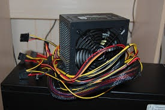

Nätaggregat
Utan ett nätaggregat så kan inte datorn fungera för att datorn måste strömförsörjas. Den gör väldigt viktigt arbete eftersom varje del av datorn inte använder sig av samma spänning, och nätaggregatet omvandlar nätspänning till lämplig drivspänning för datorns olika komponenter. Om man bygger en dator så ska man verkligen vara försiktig, man ska inte hålla på och pilla inuti den och man ska heller inte köpa ett billigt nätaggregat om man vill ha en pålitlig dator. Om nätaggregatet går sönder kan den förstöra andra delar i processen.